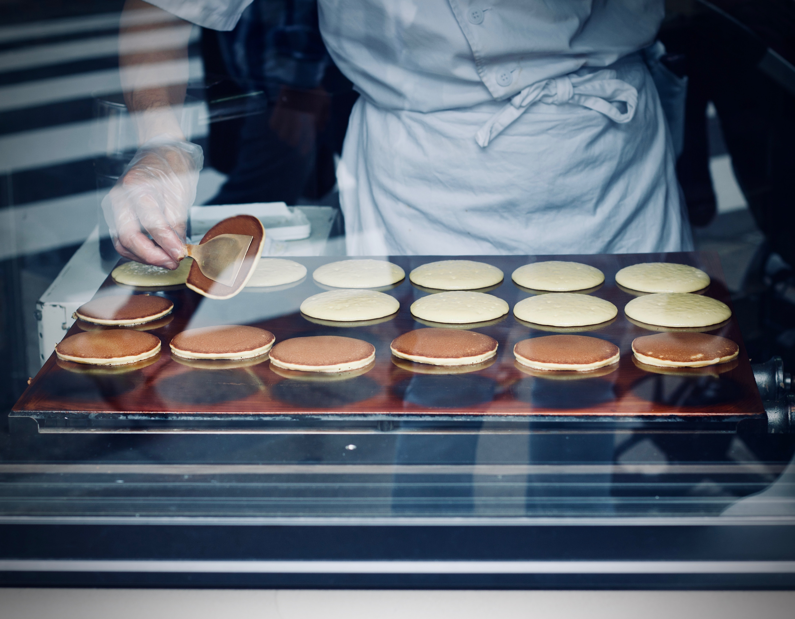

Dorayaki is a type of Japanese confection. It consists of two
small pancake-like patties made from castella wrapped around
a filling of sweet azuki bean paste. The original Dorayaki
consisted of only one layer. Its current shape was invented
in 1914 by Usagiya in the Ueno district of Tokyo.

Dorayaki Dora Dora
Ingredients
Directions:
Dorayaki Tips:
If you would like to make thicker pancakes, simply add less water (or milk).